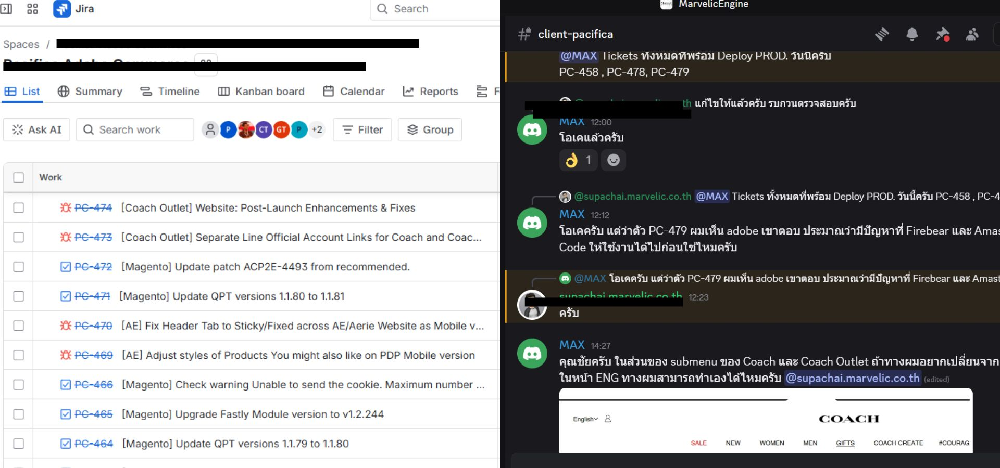
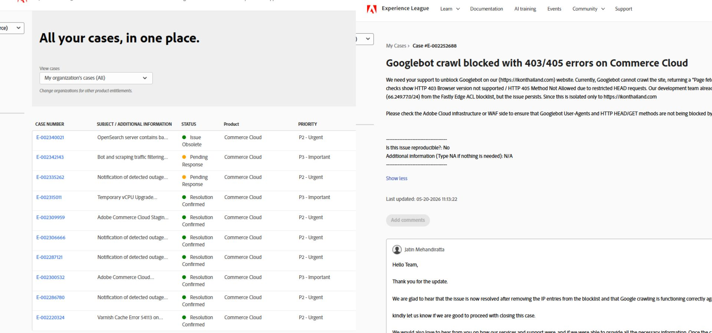

Technical Coordination & Web Operations
I act as the main bridge between business requirements and technical execution. Leveraging my front-end background, I manage multi-brand web operations by coordinating directly with internal development teams, external vendors, and global platform support networks to resolve incidents and ensure system stability.
Cross-Functional Coordination & Ticket Management

Workflow tracking via Jira tickets and active technical syncs on Discord.
- Managed end-to-end technical alignment with Marvelic, creating detailed Jira tickets, leaving technical comments, and tracking updates across different task statuses.
- Utilized Discord as the primary communication hub for real-time troubleshooting discussions, helping teams understand root issues faster.
- Translated non-technical business requests into clear, actionable technical specifications to prevent communication gaps between teams.
Vendor Escalation & Incident Support

Escalating and tracking enterprise platform bugs through Adobe Experience League.
- Served as the key technical contact for platform issues, creating and managing official support tickets within the Adobe Experience League.
- Investigated production bugs, gathered system logs, and provided clear technical contexts to vendor engineering teams for accelerated troubleshooting.
- Monitored live platform alerts, coordinated hotfix deployments with lead developers, and occasionally implemented quick front-end workarounds to minimize site downtime.
Release Safety & Environment Consistency

Verifying staging environments and ticket completion before production rollout.
- Supervised final pre-launch checklists across staging environments before marking Jira tickets as ready for production deployment.
- Synchronized patch deployment schedules with external development teams to guarantee smooth campaign rollouts without disrupting live site traffic.
- Verified integration behaviors and environment settings post-deployment to ensure system stability.